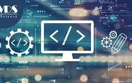

Learning Web Development
Author:Sunday Timileyin|Date:11th October, 2024
Introduction to Web Development
Web development can be broken down into three main types: Front-end development: Focuses on the user-facing side of a website, such as the design, layout, and interactivity. Back-end development: Focuses on the server side of a website, such as storing databases, processing user input, and ensuring security. Full-stack development: Involves both front-end and back-end development. Other aspects of web development include: Database management: Involves storing and handling databases to ensure data is managed effectively. Maintenance and updates: Involves fixing bugs, updating features, and ensuring security. Deployment: Involves transferring code, database, and files from a testing environment to a live server.
What is Web Development?
Web development is the process of creating, maintaining, and programming websites and web applications that run on a browser. It involves using coding languages, such as HTML, CSS, and JavaScript, to make websites look good, work well, and perform quickly. Web development is closely related to web design, but the two are not the same. Web design focuses on the features and functionality of a website, while web development is more about the construction and programming. Web developers and web designers work together to create high-quality websites.
5 Website Development tips you should know
- Focus on your site's user experience
- Use customizable website template
- include high quality content
- Optimize for SEO
- Use a relatable site infrastructure
Comparison of web infrastructure
| Technicality | Description |
|---|---|
| Javascript | Javascript is good |
| Python | Python is also good |
| C# | C# is good |